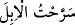
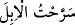
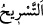
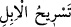

bir nebze olsun kapatmaktır. Koca boşadığı hanımın iddet müddetinde faydalanması için
bu boşanma bedelini verir. Boşanma bedeli zenginlik ve fakirliğe göre değerlendirilir.
Ancak kadının mehrinin yarısı verilen bu boşanma bedelinden az ise bu sefer az olan
miktar verilir. Yine de bu miktar beş dirhemden az olamaz. Çünkü mehrin en azı on
dirhemdir. Boşanma bedeli mehrin yarısı olan beş dirhemden az olamaz.
“ meyvalı ağaç demektir. “ sözünün asıl anlamı, deveyi meyveli
meyvalı ağaç demektir. “ sözünün asıl anlamı, deveyi meyveli
ağaçlardan otlatmak için salıverdim, demektir. Sonra her türlü otlamaya salıverme için
bu kelime kullanılmıştır. “ kelimesinin boşama hakkında kullanılması, ‘talâk’
kelimesinin devenin bırakılmasından müsteâr olması gibi devenin salıverilmesinden () müsteârdır.
Boşama niyeti olmadan talâkın kendisiyle meydana geldiği sarîh lafız, Ebû Hanife ve
Ahmed b. Hanbel’e göre talâk/boşama; İmam Şâfiî ve İmam Malik’e göre ise talâk
(boşama) firâk (ayrılık) ve serah (salıverme) lafızlarıdır.
İmamların ittifâkına göre boşamada sünnet olan, kadını cinsî ilişkide bulunmadığı
temizlik döneminde bir talakla boşamak, sonra da iddeti tamam olana kadar o kadına
dokunmamaktır.
Şâyet kişi gerdeğe girmiş olduğu hanımını hayız hâlinde veya ilişkide bulunduğu
temizlik döneminde boşarsa, kadın da gebe kalabilecek bir kadın ise bu haram olan
bid‘at talâkıdır ve ittifakla geçerlidir.
Üç talakı birden vermek Ebû Hanife ve İmam Mâlik’e göre bid‘attır. İmam Şâfiî’nin
aksine Ahmed b. Hanbel onun haram olduğunu söylemiştir. Ancak bu şekil bir boşama
da imamlar arasında ihtilaf olmaksızın geçerlidir.
Ancak bilesin ki Şâri‘, boşanmayı ancak ülfete, dirlik ve düzene teşvik için hoş
görmemiştir. Allah, insanların çoğuna gizli olan bir hakikat sebebiyle bir araya getirilip
ülfet ettirilen herkesin ayrılmasının kaçınılmaz olduğunu bildiğinden, kullarına bir
rahmet olarak talakı meşrû kılmıştır. Bu, onların fiillerinde ecre nâil olmaları, şeytanın
burnunu sürterek yerilenlerden değil övülenlerden olmaları içindir. Çünkü onlar bu
talak konusunda ilâhî izne tâbidirler.
Talâkın Allah Teâlâ’ya helallerin en sevimsizi olması, onun ademe/yokluğa dönüş
olması sebebiyledir. Çünkü tabiatların kaynaşmasıyla terkibin varlığı ortaya çıkar. Bu
kaynaşmadan sonra ise adem/yokluk olur. İşte bu şâibeden dolayı bir araya gelmenin
aynı/kendisi yok olduğundan eşler arasında ayrılık nâhoş görülmüştür. el-Fütûhât’ta
böyle geçmektedir.
Âyette boşama bedellerinin, salıvermeden önceye alınması, lütuf ve kerem
bâbındandır. Bunda daha baştan Peygamberimiz (a.s.)’ın eşlerinin ileri sürecekleri
mazeretlerin önünü kesmek vardır.